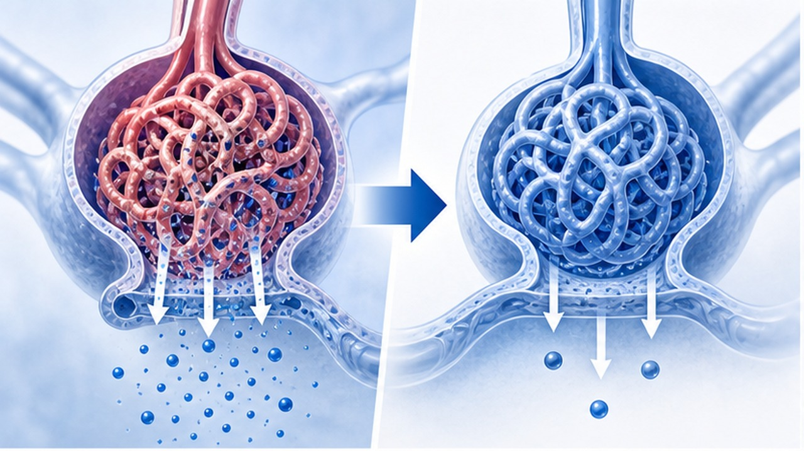
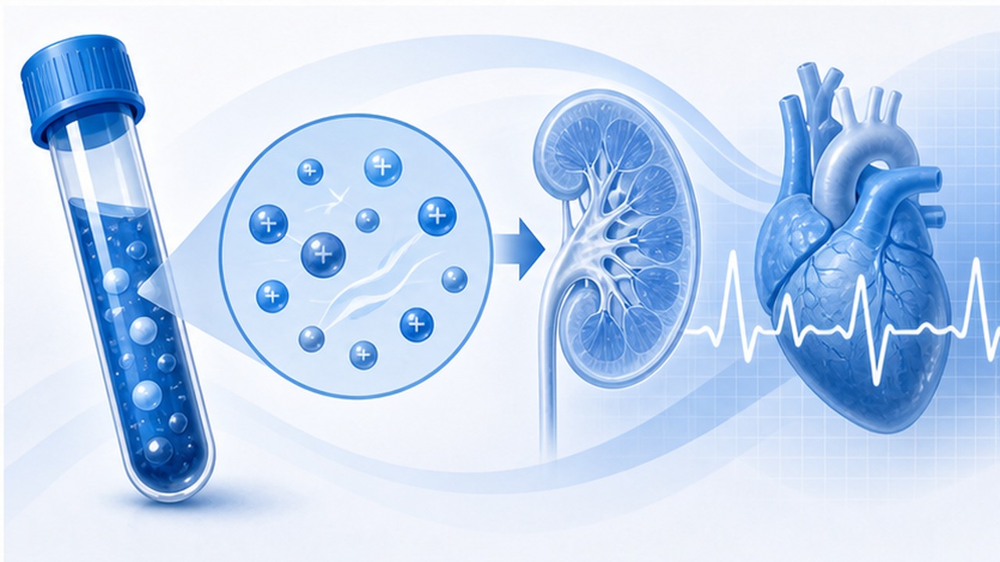
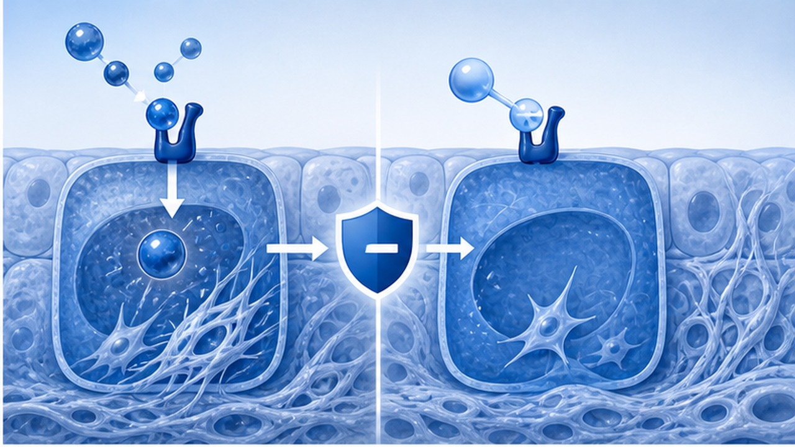
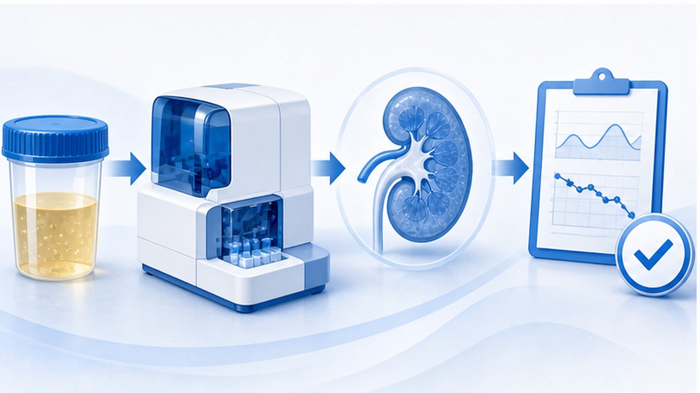

PAPER REVIEW · ENDOCRINOLOGY · NEPHROLOGY
1형 당뇨 CKD에서 Finerenone,
알부민뇨를 낮춘 첫 3상 신호
NEJM 2026.03 — FINE-ONE phase 3. T1D + CKD + UACR 200-5000 mg/g에서 6개월 UACR 위약 대비 25% 추가 감소.
CHAPTER 01 · TL;DR
한 문단·세 숫자로 요약
T2D CKD 근거가 T1D 알부민뇨 환자로 확장되는 첫 phase 3 근거다.
RANDOMIZED
242명
T1D + CKD + UACR 200-5000 mg/g, ACEi/ARB 복용 중.
PRIMARY
25%
6개월 UACR 위약 대비 추가 감소. geometric mean ratio 0.75.
SAFETY
10.1%
고칼륨혈증: finerenone 10.1% vs placebo 3.3%.
핵심 메시지 — UACR surrogate endpoint는 명확히 좋아졌다. 단, hard renal/CV outcome을 입증한 연구는 아니며 칼륨·eGFR 모니터링을 전제로 해석해야 한다.

CHAPTER 02 · UNMET NEED
왜 중요한가: T1D CKD의 옵션 부족
제1형 당뇨병의 신장질환은 젊은 나이부터 장기 위험을 만든다.
기존 표준
- 혈당 조절 — A1c 목표 개별화, 저혈당 피하기
- 혈압 조절 — RAAS blockade 중심
- ACEi/ARB — 알부민뇨 동반 CKD의 기본축
- SGLT2i — T1D에서는 DKA 위험과 허가 제한 때문에 일반 표준으로 보기 어렵다
남는 문제
- 잔여 알부민뇨 — ACEi/ARB에도 진행 위험 지속
- 심혈관 위험 — CKD 자체가 독립 위험인자
- 근거 공백 — T2D에서 입증된 약제가 T1D에는 거의 시험되지 않음
- 치료 피로 — 장기 추적·검사 순응도가 관건
CHAPTER 03 · TRIAL DESIGN
FINE-ONE 설계
hard outcome trial이 아니라, 6개월 UACR 변화를 1차 평가변수로 둔 registration trial이다.
01
Population
성인 T1D + CKD. eGFR 25-<90 mL/min/1.73m².
02
Albuminuria
UACR 200-<5000 mg/g. 이미 의미 있는 알부민뇨가 있는 군.
03
Background therapy
ACE inhibitor 또는 ARB 복용 중인 환자.
04
Intervention
Finerenone 10 mg 또는 20 mg/day, eGFR 기반 시작.
05
Comparator
Matching placebo, double-blind randomization.
06
Primary outcome
6개월 동안 UACR relative change.
CHAPTER 04 · PRIMARY ENDPOINT
UACR: finerenone이 더 크게 낮췄다
절대값보다 상대 변화와 위약 대비 차이를 기억하면 된다.
Finerenone
−34%
Placebo
−12%
Vs placebo
−25%
P value
<0.001
01
Baseline to 6 months
Finerenone: median UACR 574.6 → 373.5. Placebo: 506.4 → 475.6.
02
해석
알부민뇨 감소는 장기 신장위험 감소와 연결되지만, 본 연구 자체는 장기 outcome을 직접 증명하지 않는다.
CHAPTER 05 · SAFETY
안전성: 고칼륨혈증과 초기 eGFR dip
비슷한 계열의 해석 원칙: 효과는 기대하되, 칼륨은 반드시 본다.
항목
Finerenone
Placebo
실무 해석
고칼륨혈증
10.1%
3.3%
가장 흔한 이상반응. 시작 전·초기 추적 K 확인
고칼륨 중단
1.7%
0%
대부분 관리 가능했으나 중단 사례 존재
eGFR 변화
−5.6
−2.7
초기 dip. washout 기간에 baseline 접근
치료 중단
6.7%
8.2%
전체 중단은 위약과 유사

CHAPTER 06 · MECHANISM
Finerenone의 위치
비스테로이드성 mineralocorticoid receptor antagonist로 염증·섬유화 축을 겨냥한다.
01
MR blockade
Mineralocorticoid receptor 과활성을 막아 신장 염증·섬유화 신호를 줄인다.
02
Nonsteroidal
Spironolactone과 달리 비스테로이드성 구조. T2D CKD에서 outcome 근거 축적.
03
Albuminuria
사구체 손상 신호를 낮추는 방향. UACR는 치료 반응 추적에 적합.
04
Potassium
RAAS blockade와 병용될 때 고칼륨 위험이 올라가므로 모니터링 필수.

CHAPTER 07 · MONITORING
진료실 모니터링 흐름
허가·보험 적용 전이라도, 적용 후보를 생각할 때 필요한 안전 프레임이다.
01
Baseline
K, eGFR, UACR, 혈압, ACEi/ARB 용량 확인. K 높으면 시작 보류.
02
4주
K/eGFR 재확인. 칼륨 상승 시 용량 조절·식이·병용약 검토.
03
3개월
UACR 추적. 혈압·탈수·NSAID 사용 점검.
04
6개월
UACR 반응과 안정성으로 지속 여부 판단.

CHAPTER 08 · WHO
적용을 고려할 환자상
지금은 '가이드라인 즉시 변경'보다 후보군을 식별하는 단계로 보는 것이 안전하다.
01
T1D + CKD
제1형 당뇨병이 명확하고 CKD가 동반된 성인.
02
UACR ≥200
의미 있는 알부민뇨가 반복 확인된 환자.
03
eGFR 25-90
연구 포함 범위. 말기 CKD·투석 전 단계는 별도 판단.
04
ACEi/ARB 사용
RAAS blockade 최적화 후에도 잔여 알부민뇨가 남는 경우.
05
칼륨 안정
고칼륨 병력·식이·병용약 위험을 견딜 수 있어야 함.
06
추적 가능
초기 K/eGFR 추적에 순응 가능한 환자.
CHAPTER 09 · INTERPRETATION
무엇을 말할 수 있고, 무엇은 아직인가
알부민뇨 감소는 강한 신호지만 장기 endpoint는 아직 직접 증명 전이다.
말할 수 있는 것
- UACR 감소 — 위약보다 통계적으로 명확
- T1D 근거 — T2D 외 영역으로 확장되는 첫 3상 결과
- 안전성 — 고칼륨은 증가하지만 중단은 소수
- 실무 준비 — 후보군·모니터링 체계를 만들 근거
아직 말하기 이른 것
- ESKD 감소 — 본 연구에서 직접 증명 아님
- MACE 감소 — T1D hard CV outcome 근거는 부족
- 모든 T1D 적용 — 알부민뇨 없는 환자에 일반화 불가
- SGLT2i 대체 — 약리·위험·허가 이슈가 달라 단순 대체 불가
표현 — '신장 보호 효과가 입증됐다'보다 '알부민뇨를 의미 있게 낮췄고 장기 신장 보호 가능성을 뒷받침한다'가 정확하다.
CHAPTER 10 · COUNSELING
환자 설명 문장
기대 효과와 검사 부담을 동시에 말해야 순응도가 생긴다.
상황
설명
확인
기록
시작 전
소변 단백을 줄이는 약
K/eGFR/UACR
ACEi/ARB 복용 확인
효과
6개월에 소변 단백 감소 기대
UACR 추적
장기 outcome은 추적 필요
위험
칼륨 상승 가능
근력저하·부정맥 증상
고칼륨 교육
생활
저염·혈압·탈수 회피
NSAID/보충제 확인
병용약 점검
CHAPTER 11 · LIMITATIONS
한계와 향후 가이드라인 전망
관심은 높지만, 처방 기준은 허가·보험·장기 결과를 기다려야 한다.
01
짧은 기간
double-blind 치료 6개월. 장기 신장·심혈관 endpoint 확인 필요.
02
선별된 환자
UACR 200-5000 mg/g, eGFR 25-90, ACEi/ARB 사용군.
03
Surrogate endpoint
UACR는 강력한 marker지만 환자중심 결과는 아님.
04
고칼륨 모니터링
추적 검사를 할 수 없는 환경에서는 안전성이 떨어진다.
05
가이드라인 반영 가능성
T1D + 알부민뇨 CKD에서 추가 옵션으로 논의될 가능성.
06
국내 적용
허가 적응증과 급여는 별도 확인 필요.
CHAPTER 12 · TAKE HOME
진료실 결론
FINE-ONE은 T1D CKD 치료 공백에 들어온 의미 있는 신호다.
01
대상은 좁다 — T1D + CKD + UACR 200-5000 mg/g + ACEi/ARB 사용군.
02
효과는 UACR — 6개월 위약 대비 25% 추가 감소, hard outcome은 아직 직접 증명 전.
03
고칼륨이 핵심 — 시작 전과 초기 K/eGFR 모니터링 없이는 쓰기 어렵다.
04
가이드라인 후보 — T1D 알부민뇨 CKD의 add-on option으로 부상 가능.
CLINIC NOTE
광교바른내과 · 의료진 논문 리뷰
국내 허가·급여 범위와 potassium monitoring protocol은 실제 처방 전 확인이 필요합니다.
온라인 슬라이드
QR 스캔
QR 스캔